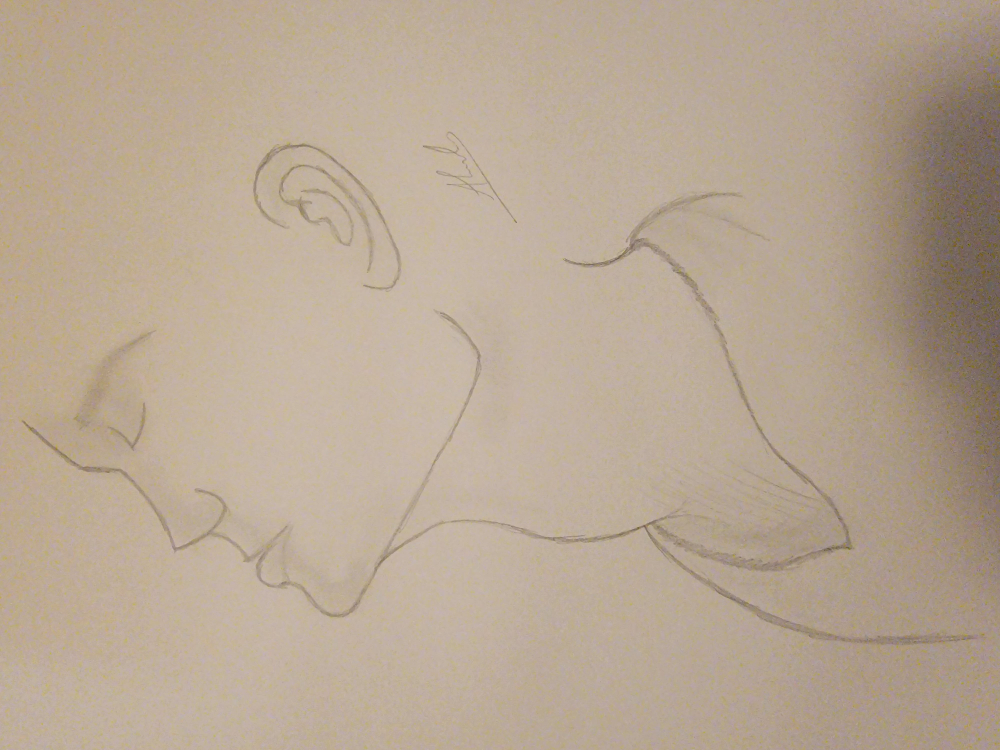
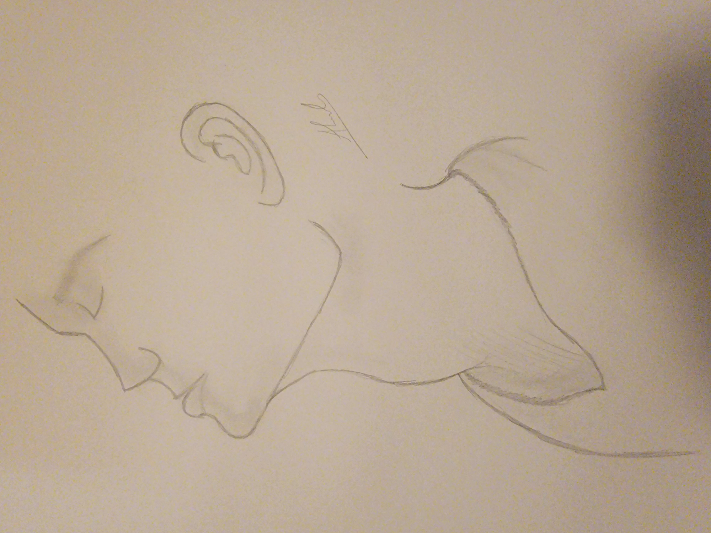

According to Wikipedia: A sketch (ultimately from Greek σχέδιος – schedios, "done extempore") is a rapidly executed freehand drawing that is not usually intended as a finished work. A sketch may serve a number of purposes: it might record something that the artist sees, it might record or develop an idea for later use or it might be used as a quick way of graphically demonstrating an image, idea or principle. Sketching is the most inexpensive art medium. Sketches can be made in any drawing medium. The term is most often applied to graphic work executed in a dry medium such as silverpoint, graphite, pencil, charcoal or pastel. It may also apply to drawings executed in pen and ink, digital input such as a digital pen, ballpoint pen, marker pen, water colour and oil paint. The latter two are generally referred to as "water colour sketches" and "oil sketches". A sculptor might model three-dimensional sketches in clay, plasticine or wax.


 
